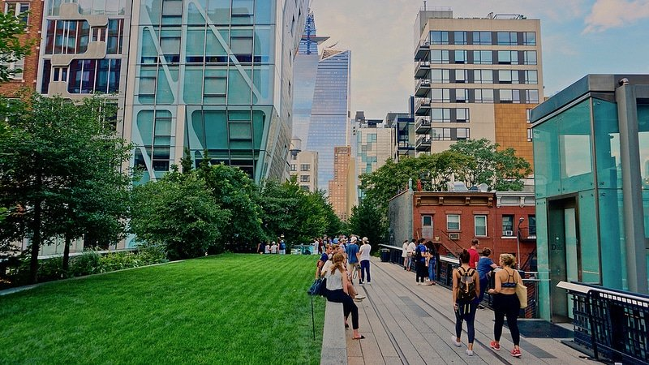
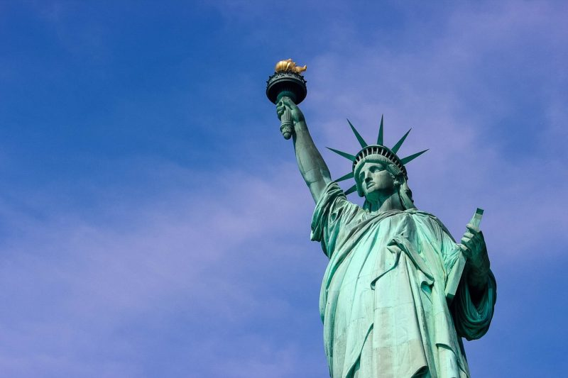
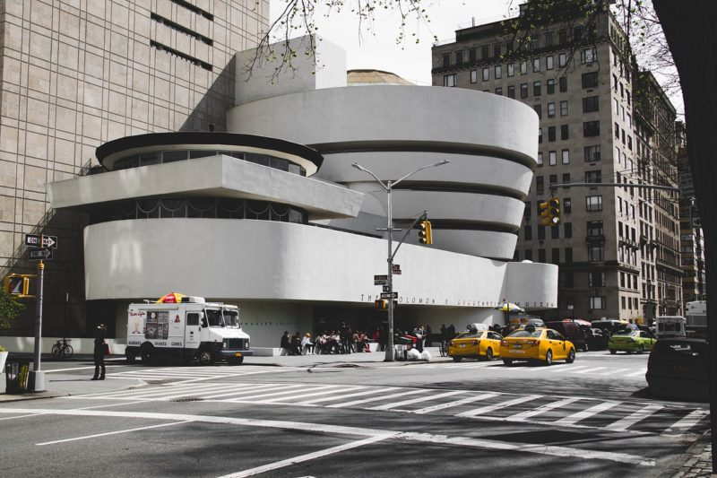

LES LIEUX INCONTOURNABLES POUR VISITER NEW YORK
Comme tout new-yorkais vous le dira, il est impossible de découvrir tous les meilleurs endroits de cette grande et complexe ville, en une seule visite. Et oui, cela fait partie de l’excitation à visiter New York : il y a toujours quelque chose de nouveau à découvrir. Mais toutes ces options alléchantes peuvent aussi rendre difficile la planification de votre visite de New York. Alors au lieu d’essayer de tout voir, manger, boire et visiter à NYC, nous avons dressé une liste des principales meilleures choses à faire à New York : des sites emblématiques aux favoris des locaux.
La High Line
Les new-yorkais adorent se promener et la High Line, un parc linéaire urbain suspendu long de 2.3 km qui s’étend du quartier de Meatpacking à travers Chelsea sur une voie ferrée abandonnée, est une promenade fantastique. Ressuscité avec un labyrinthe étonnant de jardins (présentant 300 espèces de plantes), de chemins et de plans d’eau, il offre un œil différent sur l’architecture contemporaine, la rivière Hudson : ou comment visiter New-York dans la peau d’un local.

La Statue de la Liberté
Que vous la découvriez depuis Battery Park ou bien à bord du ferry de Staten Island, vous devez vraiment contempler la Statue de la Liberté si vous venez visiter New-York. Approchez-vous jusqu’à ses pieds pour avoir une très belle vue sur la rivière et Manhattan. La statue de cuivre la plus emblématique du monde a été conçue par Frédéric-Auguste Bartholdi comme un cadeau de la France en 1886 à l’occasion du centenaire des Etats-Unis. « Lady Liberty » mesure 46 m de haut, avec un index mesurant 2.40 m de long et des yeux de près de 90 centimètres de large. L’une des meilleures choses à faire lors d’une visite de New York est de passer devant la statue en ferry et de visiter le musée de l’immigration sur Ellis Island. Ellis Island est lieu historique de l’immigration américaine qui est transformé en musée depuis 1990.

Central Park
Que vous alliez à Central Park pour monter sur le Carrousel vintage de 1908, siroter un verre de vin tout en admirant la vue sur le lac depuis le Boathouse Café, rigoler devant les otaries et les pingouins du zoo, observer les oiseaux au Ramble, ou courir autour du Reservoir avec les locaux, cet oasis de 341 hectares est le plus grand jardin urbain du monde et une expérience incontournable à explorer si vous venez visiter New-York pour en découvrir notamment ses poumons de verdure.
Metropolitan Museum of Art
Génial et intimidant, le Metropolitan Museum of Art se classe parmi les meilleurs musées d’art du monde, abritant des chefs-d’œuvre médiévaux et expressionnistes mais aussi l’ensemble d’un temple égyptien. Les sculptures grecques et romaines, les expositions d’Afrique et d’Océanie, et l’aile asiatique sont également assez incroyables. Si vous vous réveillez un matin et qu’il pleut, rendez-vous au « Met » (ouvert sept jours par semaine) et égarez vous dans les allées du musée.
Musée Solomon R. Guggenheim
Une visite du musée Guggenheim est doublement enrichissante si vous cherchez que faire à New-York dans le cadre d’une visite originale : vous y découvrirez une sélection pointue de collections d’objets d’art moderne et contemporain et entrerez dans l’un des bâtiments les plus emblématiques du milieu du 20ème siècle aux Etats-Unis. Conçu par Frank Lloyd Wright et inauguré en 1959, le musée imite une coquille de nautilus (un mollusque) en spirale, qui conduit les visiteurs sur des rampes en pente douce où des expositions mettent en vedette des œuvres de Picasso, Monet, Gauguin, Cézanne, Kandinsky, et d’autres autour d’une rotonde dramatique.

Voici quelques images vous permettant d'avoir un aperçu sur la ville de New york.